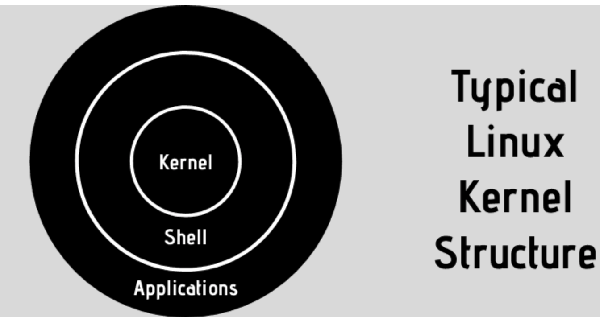
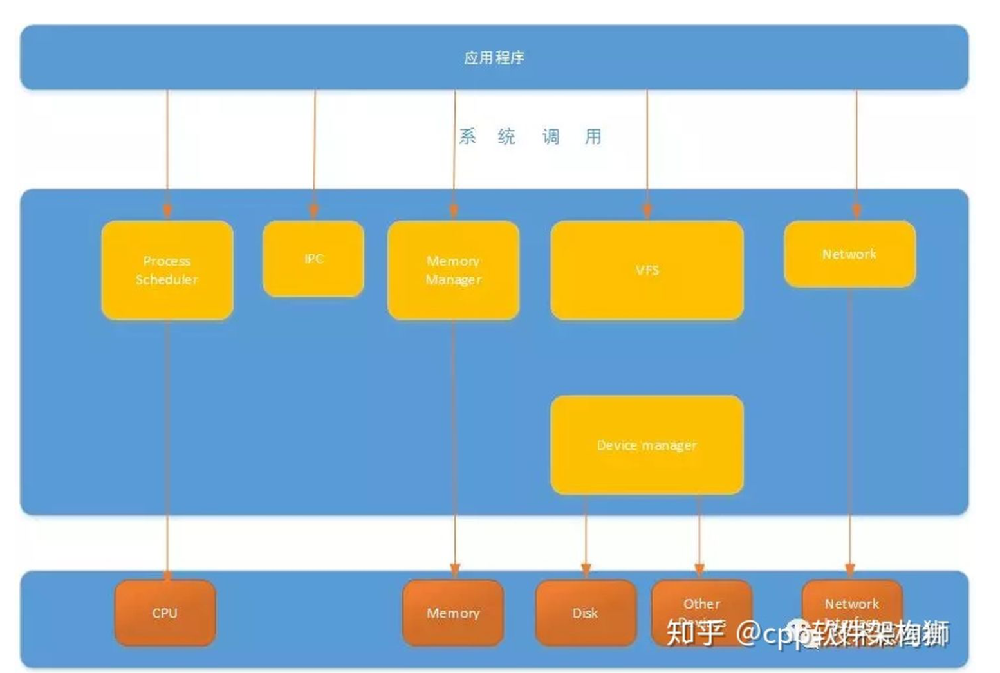
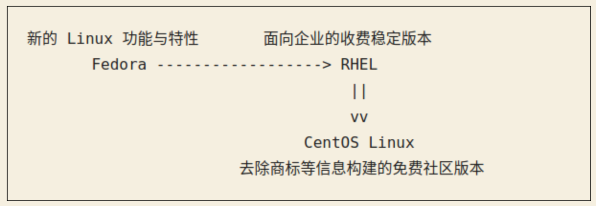
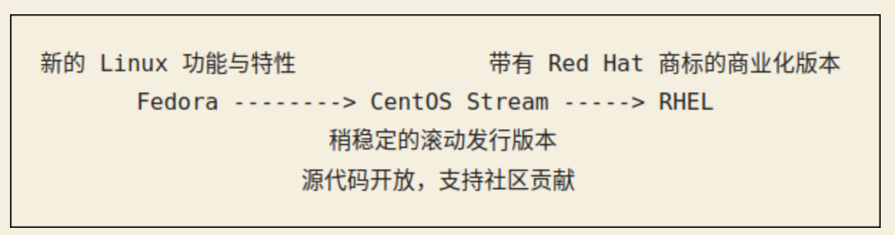

发行版定义
由内核，GNU工具，附加软件和包管理器组成的操作系统。也可能包括桌面和显示服务器
其实也就是像Debian，Ubuntu这样的公司发行了Linux内核，和其所有必要的软件和应用程序，使其作为一个操作系统使用。发行版还负责提供更新以维护内核和其他应用程序。
在Linux诞生前，Richard Stallman创建了GNU（GNU is not Unix），GNU实现了很多Unix程序，比如cat，grep，并且开发了gcc和emacs
在80年代，Unix是专有软件，所以Linux Torvalds开发了一个类Unix的新内核。为了和内核交互，使用了GNU工具。因为使用这些GNU工具，linux的行为也和Unix类似，因此Linux被叫做类Unix系统。
系统调用将Linux分为内核态和用户态。
内核态：控制计算机的硬件资源
用户态：提供应用程序运行的空间
为了让应用程序访问到内核管理的资源，内核提供了一组通用访问的接口，也就是系统调用
如下图所示，内核控制和管理硬件，内存，进程调度和管理，文件，设备驱动管理，网络管理
用户态 -> 内核态的方法：
- 系统调用
- 异常
- 外设中断
库函数：对系统调用进行封装，提供简单的基本接口
关于CentOS8 Stream
Red Hat公司主要负责三个发行版：Red Hat企业版本（RHEL），CentOS，Fedora
原来的流水线：
当Linux内核有新功能时，先在Fedora发布，勇于试验的用户先进行体验
当新特性被评估为稳定后就会加入RHEL发行版（收费）
CentOS是RHEL去除商标等的免费版
CentOS Stream引入后：
现在CentOS的位置处于upstream，改变了原来位于RHEL的下游的状态
采用滚动发布模型，允许社区对CentOS的贡献应用于下游的RHEL。
滚动发布：参考
软件的更新是连续推出的，也就是小而频繁的更新，好处是可以从仓库中获得最新的内核和软件版本。而不是分批的版本，像Ubuntu的xyz版本
Q：Ubuntu也有每周的更新，这种是否也是滚动发布？
A：这种更新一般是安全和维护更新，而不是新功能的发布
滚动发布一般每几个月提供一个新的ISO，也就是ISO刷新，这样新用户就能得到一个更新的Linux发行版
当正在使用滚动发行版，就不用担心ISO刷新了，因为系统已经和最新发行版对等了。ISO主要是帮助在新系统上安装的人。（假如使用2018年的硬件，安装2021年的Linux，如果没有ISO刷新，不得不安装过去几年的所有更新）
优点：能获得最新的更新
缺点：点版本发布一般会进行系统中集成的组件测试，而滚动发布，软件一旦发布就被推出